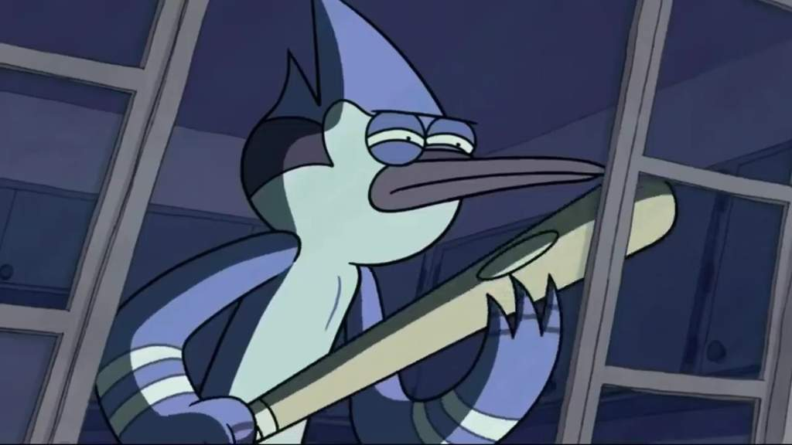
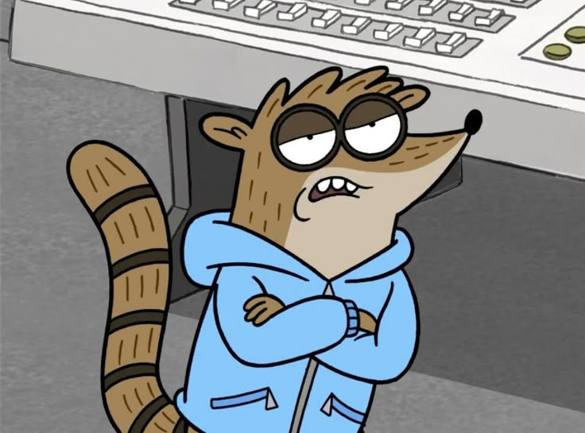
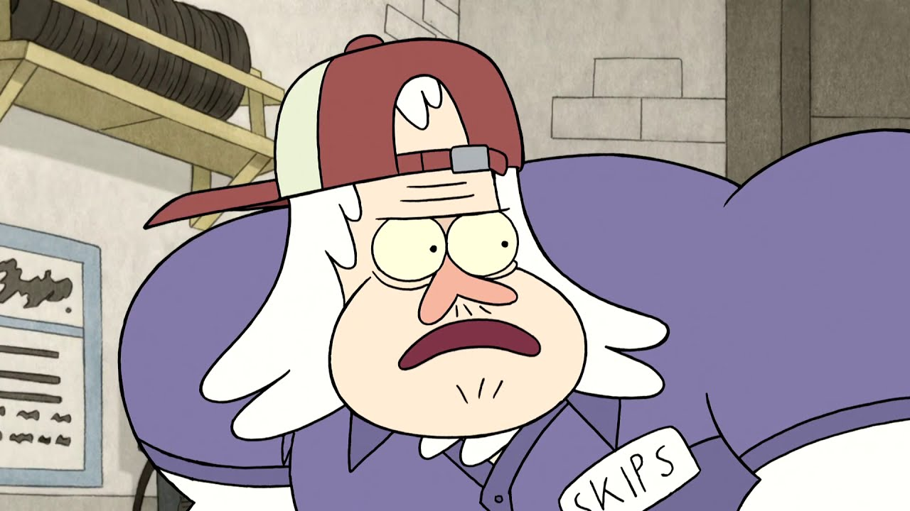

Mordecai would be the cool, slightly irresponsible older sibling. He’d show up late to family events with wild stories, always encouraging a little mischief but with a heart of gold. He’d crack jokes, make everyone laugh, and teach you random stuff like guitar riffs. He might get into trouble, but you can’t stay mad at him for long—he’s got a surprisingly thoughtful side, even if he doesn’t show it often.

Rigby would be the wild, unpredictable younger sibling who’s always getting into trouble. He’s hyper, impulsive, and constantly dragging others into his chaotic schemes, but he’s also loyal and has a big heart. He’d probably be the one who eats all the snacks at family gatherings, challenges you to random games, and acts like the life of the party, even if his energy is a bit too much at times. Deep down, he means well, even if his actions don’t always show it.

Skips would be the wise, reliable older family member everyone turns to for advice. Calm, collected, and always in control, he’s the type who’s seen it all and never loses his cool. He might be the strong, silent type, but when he speaks, people listen. He’s the one who steps in to solve problems without making a big deal about it and is always there to help when things go wrong. He’s also secretly a bit of a softie, though he doesn’t show it much. Family gatherings would be a lot smoother with Skips around.